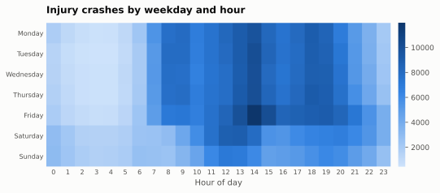
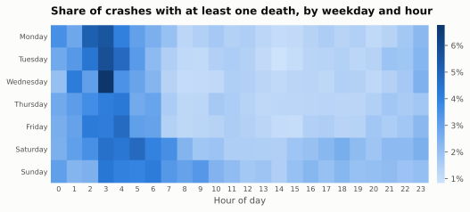
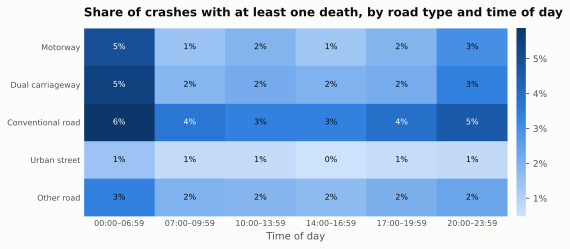
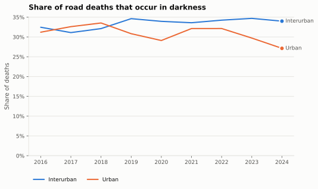

Timing
When crashes happen and when they turn deadly: by hour, weekday, road type and lighting, from 875,013 injury crashes recorded between 2016 and 2024.
Hour and weekday


Crashes cluster in the afternoon rush on weekdays. Fatal outcomes follow a different clock: the share of crashes that kill someone is lowest in the daytime and peaks between two and five in the morning on every day of the week, when traffic is light and speeds are higher. The very highest cells are weekday nights, not weekends.
Road type and time of day

| Road type | 00:00–06:59 | 07:00–09:59 | 10:00–13:59 | 14:00–16:59 | 17:00–19:59 | 20:00–23:59 |
|---|---|---|---|---|---|---|
| Conventional road | 5.9% | 3.7% | 3.4% | 3.4% | 3.9% | 4.6% |
| Dual carriageway | 5.4% | 1.8% | 2.1% | 1.9% | 2.1% | 3.3% |
| Motorway | 4.9% | 1.5% | 1.9% | 1.3% | 1.9% | 3.0% |
| Other road | 3.4% | 1.9% | 1.8% | 1.7% | 2.0% | 2.3% |
| Urban street | 1.4% | 0.7% | 0.7% | 0.5% | 0.6% | 0.7% |
Darkness

| Year | Interurban | Urban |
|---|---|---|
| 2016 | 32.5% | 31.2% |
| 2017 | 31.1% | 32.6% |
| 2018 | 32.1% | 33.5% |
| 2019 | 34.6% | 30.8% |
| 2020 | 34.0% | 29.1% |
| 2021 | 33.6% | 32.1% |
| 2022 | 34.2% | 32.1% |
| 2023 | 34.7% | 29.7% |
| 2024 | 34.0% | 27.1% |